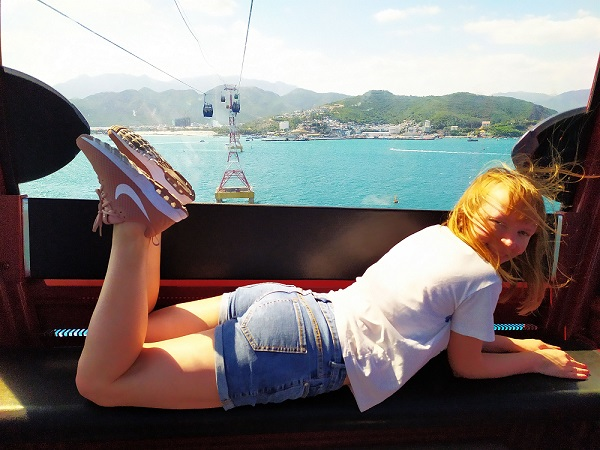

Vinpearl
Most people go to Vinpearl for amusement riding, there are a lot of water-coasters and usual huge roller-coasters. I don't like them, moreover I have visited Disneyland and Port Aventoura and I just know what to expect. Our aim of this trip was to ride on a one of the most long cable way that we saw from our beach and it looked huge.
It's perfectly that we were only together in a cable car cabin during the way to the island, had chance saw all around and made a lot of photos. It was a quite thrilling when wind was blowing and the cabin was swinging.
The view frome Vinpearl island to mainland was amazing. Also, the island itself was wery green. It was pleasure just walking there and discover new sights. Besides roller coasters there were a zoo, some exibisions of flowers,trees and an aquarium. Of course there was a New Year tree near the main entrance, New 2020 Year were going to happen in four days.

In the zoo area Kostia had a close meet with a camel while I watched my favourite animal giraffe. The weather was very hot and most animals were hidding in the shadow. Flowers were groving in huge glass domes. Indoor were freshly and beautiful. Those constructions reminded me some moovies about life on Mars, there people grew food.

There were some more interesting places near a desert area: a dome with trees and cactuses and completely opposite green and blooming Japanese style site.
Unfortunately, I don't remember the name of this tree but it was soo cool and big. Now it is one of my favourite trees, after Rim's pines.
We had a rest in a Japanese area and went to a high sight wheel. It was an interesting attraction and a good place for having a rest from walking and hot weather too. There were an air condition in a cabin and solar-protective glass.

All looked different at night. There were a lot of lantern and a final laser show. There was only one disadvantage to stay there until late time, we had to miss the latest bus from cable way to our hotel. Also, we didn't find where to eat, there were only pizza and hot dogs, so we just drank some coffe. Also, at the evening got slightly cool and I put a Kostia's t-shirt on.
Summaries:
1 – If you aren't going to visit all roller-coasters and the aquapark it's better to go to Vinpearl after a dinner, there would be less people in cable way and not so hot for walking.
2 – Don't warry if you are late for a last bus. There is a convinient taxy app similar to Uber, we used it some times and were satisfied. Moreover there were a queue frome a taxy cars for people who returned from the island.